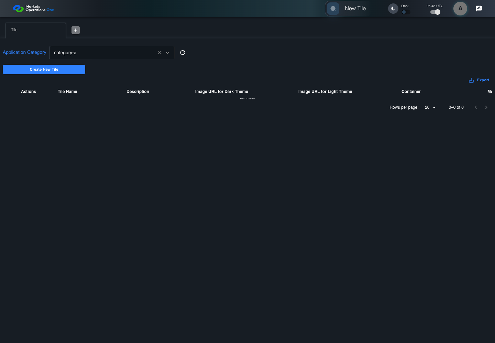
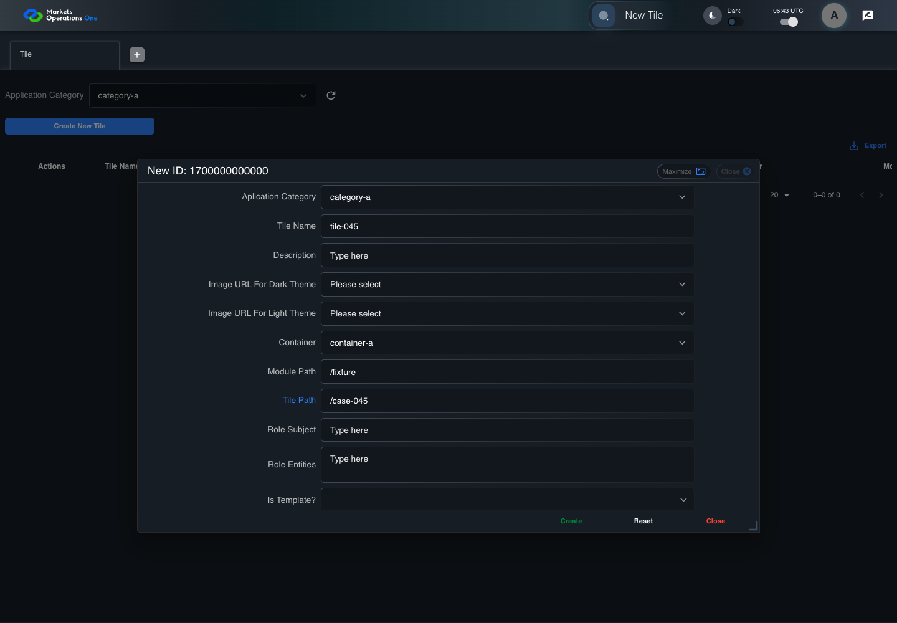
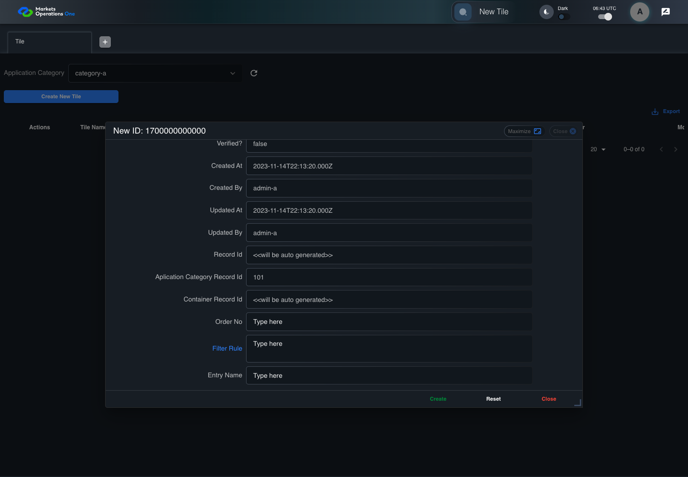
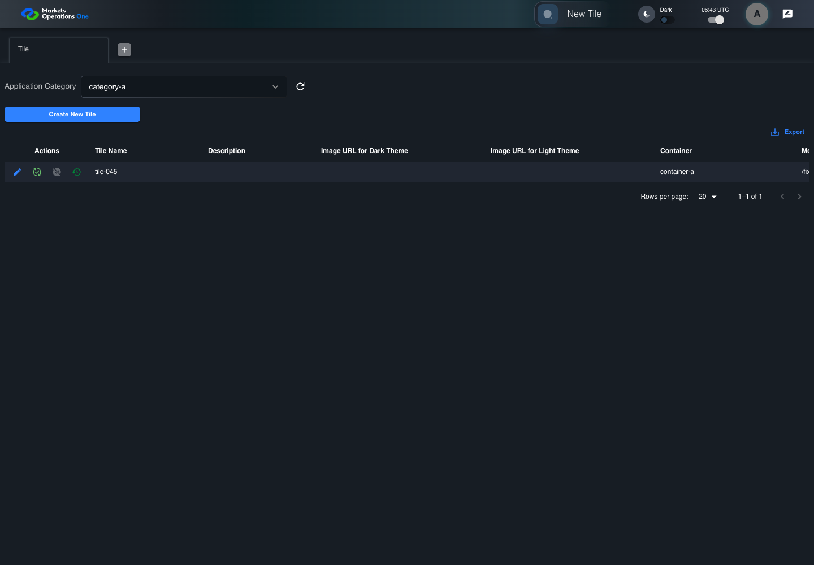
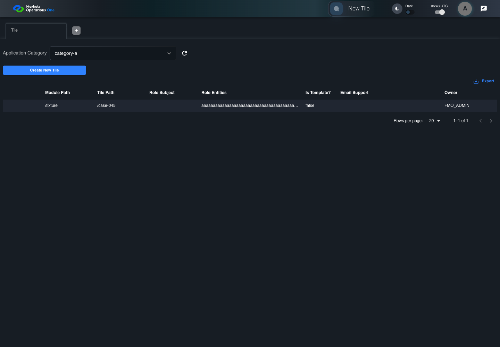

BFF-ADM-045 current BFF administration through actual UI
PASS · application/run-072/bff-adm-045-current-bff-administration-through-actual-ui-fb62f3c8ede2-attempt-1 · ACTUAL_APPLICATION_LOCAL_SERVICES
Actual current React and exact-current BFF admin controllers/services/JPA with actual migration DDL in disposable PostgreSQL. Controlled OUD/EMS2 identities and local Spring bootstrap. Fixture SQL seeds/mutates isolated records; service errors are actual database errors. Undefined agreed messages remain unresolved acceptance.
2026-10-22T06:43:31.868Z to 2026-10-22T06:43:40.437Z
Assertions and result · Artifact manifest · Exact run inputs and source hashes
Result SHA-256:a340171b5d5809db45ee1e856eb905fc0191c6c76955bdfe8b1353bdb37cb68bMachine observations
- actual-identity-projection.json
b457c9c2268c1c40f89397920d0be3b2d7e903bed330eaae9920cee19325e593 - actual-migration-schema.json
24fea0c4774c410808518bc187d83904219850acddb27043a219b1126464df62 - baseline-inputs.json
b1adf7863d8144151eae52daac741b8646c4c8fb9afabd5559cb281a3959f02f - bff-boundary.json
c9e6a519905ff7e4c80b1e8c2b40e00855be325010e34990c4909f797653af89 - committed-ui-submission-comparisons.json
5932a6a63496e4151ca043388060ef1999c8f6f0c1e2c3c15dfa96f0338136c8 - creation-clock.json
8a84ef14f91de4a97b13f3c99882bd807fc91fde041e3cf01092d0962ce3752a - empty-filter-rule-representation.json
41429f99a0eccf835746d518eed45954346697c5fd04e540e5b83c8cda26bd19 - fixture-step-10.json
69115704cbb33d973af9652ecef7aa8f35803c22ea584987492b859ddbfbb52d - fixture-step-11.json
47b1042a615686f19505af79659af6757da3bab21093cb0893aba250af8ba191 - fixture-step-6.json
1e3eeb98912bb68994aae95f0e30278b44efea63a662a0fb66dcb3109978bef9 - fixture-step-7.json
85fadd5705c4e8e1c0d75cc3c7625c731a5ed7f534d7fab571ca4cd147b53c2c - fixture-step-8.json
abbffead4a3d814603530e703138504acc4c5d05f422c33a0579a31ef13e3033 - fixture-step-9.json
96f99352188700cff26d385849b2f8d6a23b9487954786b005ea46edeffb51d5 - initial-persisted-records.json
a15b89ddfe5b926bac0876117f274a2d4d238c491677630a43beb8082bc3aefc - persisted-after-submit.json
d023f2644bcffad118e9440938cbb8421799503bdfb10bd850b83764da4b0a15 - reference-snapshot-3.json
ed76b60e1c788d1db26a597b66bf497e2d89c46ff7df12f336eea60e3845a6d8 - reference-snapshot-4.json
790f47b18e65c7bb00280270b44b545153630e4b7924920c368b0ad8594a6476 - ui-origin-bff-requests.json
eb1955785537b424d4912c7adca5ece1813814392f79e8332f0e9d3c0df1e9f0
Screenshot capture: CAPTURED. Named frames: 26.
Step screenshot evidence: COMPLETE. 25/25 canonical steps have execution screenshots.
Canonical step timeline
Given Admin A uses subject "admin-a" with role "FMO_ADMIN" in an isolated authenticated browser
Execution: PASSED.
1. step-01 Visible state after step 1: Given Admin A uses subject "admin-a" with role "FMO_ADMIN" in an isolated authenticated browser
2026-10-22T06:43:35.064Z · 1440×1000
Step: /Users/lushevol/code/github/ratan-release-impact/workbench/tasks/ui-test-coverage-20261022/test-cases.md:16633
SHA-256:dfdc4d9f87a154c4ae46684579c40a6bd70acad870e9b4d0e2d80afa36fd4e6cAnd the controlled Tile fixture records the initial grid rows and persisted values
Execution: PASSED.
2. step-02 Visible state after step 2: And the controlled Tile fixture records the initial grid rows and persisted values
2026-10-22T06:43:35.193Z · 1440×1000
Step: /Users/lushevol/code/github/ratan-release-impact/workbench/tasks/ui-test-coverage-20261022/test-cases.md:16634
SHA-256:5fea6524825cb12fe898c7a82a100ec1bf216016ff848d7bbd02127981d9c5d7And Category 101 has label "category-a" and Import Map 201 has Module Name "container-a"
Execution: PASSED.
3. step-03 Visible state after step 3: And Category 101 has label "category-a" and Import Map 201 has Module Name "container-a"
2026-10-22T06:43:35.238Z · 1440×1000
Step: /Users/lushevol/code/github/ratan-release-impact/workbench/tasks/ui-test-coverage-20261022/test-cases.md:16635
SHA-256:feab2e28aaf87d2ba40315b11ddb560b8914f565bf5aabd61984e60e8224458aAnd both references belong to "FMO_ADMIN" and the Tile page category filter value is Category 101
Execution: PASSED.
4. step-04 Visible state after step 4: And both references belong to "FMO_ADMIN" and the Tile page category filter value is Category 101
2026-10-22T06:43:35.288Z · 1440×1000
Step: /Users/lushevol/code/github/ratan-release-impact/workbench/tasks/ui-test-coverage-20261022/test-cases.md:16636
SHA-256:175fe539e6185b8c5cdb73c65f80a1c70718919fe475aeba9f3c45c45bef3a95And the controlled creation clock returns 1700000000000 milliseconds
Execution: PASSED.
5. step-05 Visible state after step 5: And the controlled creation clock returns 1700000000000 milliseconds
2026-10-22T06:43:35.320Z · 1440×1000
Step: /Users/lushevol/code/github/ratan-release-impact/workbench/tasks/ui-test-coverage-20261022/test-cases.md:16637
SHA-256:7c9c17d649d7178d70791dad9956a9d37a861ca6d5b90fafb47659d2f38c9b2cAnd the baseline fixture data defines "Tile Name" as "tile-045"
Execution: PASSED.
6. step-06 Visible state after step 6: And the baseline fixture data defines "Tile Name" as "tile-045"
2026-10-22T06:43:35.370Z · 1440×1000
Step: /Users/lushevol/code/github/ratan-release-impact/workbench/tasks/ui-test-coverage-20261022/test-cases.md:16638
SHA-256:fcdf481d1e897dbdfd3114bceb58d9a63d7a467ecb9be62a989cffef4be10f30And the baseline fixture data defines "Module Path" as "/fixture"
Execution: PASSED.
7. step-07 Visible state after step 7: And the baseline fixture data defines "Module Path" as "/fixture"
2026-10-22T06:43:35.420Z · 1440×1000
Step: /Users/lushevol/code/github/ratan-release-impact/workbench/tasks/ui-test-coverage-20261022/test-cases.md:16639
SHA-256:b63bad2c3b152793bb52080c4d159f322c8e50f143b7c1c55ee21e79fdeca9cdAnd the baseline fixture data defines "Tile Path" as "/case-045"
Execution: PASSED.
8. step-08 Visible state after step 8: And the baseline fixture data defines "Tile Path" as "/case-045"
2026-10-22T06:43:35.473Z · 1440×1000
Step: /Users/lushevol/code/github/ratan-release-impact/workbench/tasks/ui-test-coverage-20261022/test-cases.md:16640
SHA-256:4df340404ed6f9092d29c9d6680437d2a054e04705263024b28a8bdac9c68485And the baseline fixture data defines "Role Entities" as "E-TRADE"
Execution: PASSED.
9. step-09 Visible state after step 9: And the baseline fixture data defines "Role Entities" as "E-TRADE"
2026-10-22T06:43:35.525Z · 1440×1000
Step: /Users/lushevol/code/github/ratan-release-impact/workbench/tasks/ui-test-coverage-20261022/test-cases.md:16641
SHA-256:89690475654f20f037d8fe3ace42553097d352cdc8c8aa4208528000315d498dAnd the baseline fixture data defines "Filter Rule" as ""
Execution: PASSED.
10. step-10 Visible state after step 10: And the baseline fixture data defines "Filter Rule" as ""
2026-10-22T06:43:35.569Z · 1440×1000
Step: /Users/lushevol/code/github/ratan-release-impact/workbench/tasks/ui-test-coverage-20261022/test-cases.md:16642
SHA-256:c715773ff3181223a90a92d361cb9618b0cb8ddc8b279cbee165844778f93be6And the baseline Tile references use "Aplication Category" "category-a" and "Container" "container-a"
Execution: PASSED.
11. step-11 Visible state after step 11: And the baseline Tile references use "Aplication Category" "category-a" and "Container" "container-a"
2026-10-22T06:43:35.619Z · 1440×1000
Step: /Users/lushevol/code/github/ratan-release-impact/workbench/tasks/ui-test-coverage-20261022/test-cases.md:16643
SHA-256:606003729659672aa6194f76fe854ec0e0b6a1f17ac031c6010572a6d4d13f1bAnd the prepared database uses the inspected migration DDL and reports its applied schema revision
Execution: PASSED.
12. step-12 Visible state after step 12: And the prepared database uses the inspected migration DDL and reports its applied schema revision
2026-10-22T06:43:35.668Z · 1440×1000
Step: /Users/lushevol/code/github/ratan-release-impact/workbench/tasks/ui-test-coverage-20261022/test-cases.md:16644
SHA-256:1f1a0ac93ee9716320442b4d00acd34466b550a1ae66fb853eaafb255936713fWhen Admin A clicks the button labeled "Create New Tile" on the Tile administration page
Execution: PASSED.
13. step-13 Visible state after step 13: When Admin A clicks the button labeled "Create New Tile" on the Tile administration page
2026-10-22T06:43:35.912Z · 1440×1000
Step: /Users/lushevol/code/github/ratan-release-impact/workbench/tasks/ui-test-coverage-20261022/test-cases.md:16645
SHA-256:7f97526681ad091d45b786c082a89f27080feb50a4f315810adffe7c3276826eThen the dialog titled "new ID: 1700000000000" is visible on the Tile administration page
Execution: PASSED.
14. step-14 Visible state after step 14: Then the dialog titled "new ID: 1700000000000" is visible on the Tile administration page
2026-10-22T06:43:35.979Z · 1440×1000
Step: /Users/lushevol/code/github/ratan-release-impact/workbench/tasks/ui-test-coverage-20261022/test-cases.md:16646
SHA-256:b1044c943d35e2957a40a38b2ca1e74cb4701b089490434fb69198e59c97707bWhen Admin A clicks the combobox labeled "Container" in dialog "new ID: 1700000000000"
Execution: PASSED.
15. step-15 Visible state after step 15: When Admin A clicks the combobox labeled "Container" in dialog "new ID: 1700000000000"
2026-10-22T06:43:36.325Z · 1440×1000
Step: /Users/lushevol/code/github/ratan-release-impact/workbench/tasks/ui-test-coverage-20261022/test-cases.md:16647
SHA-256:59f74529704a57c4105b137083d0b7ee7bc5eea53858c1f6f445f5bc0052a353And Admin A clicks the option labeled "container-a" in the expanded "Container" listbox for dialog "new ID: 1700000000000"
Execution: PASSED.
16. step-16 Visible state after step 16: And Admin A clicks the option labeled "container-a" in the expanded "Container" listbox for dialog "new ID: 1700000000000"
2026-10-22T06:43:37.057Z · 1440×1000
Step: /Users/lushevol/code/github/ratan-release-impact/workbench/tasks/ui-test-coverage-20261022/test-cases.md:16648
SHA-256:67bd6ba94c258185007e8ace01525a3a47fca56c992338dd0edf75053505dbb4And Admin A fills the textbox labeled "Tile Name" with "tile-045" in dialog "new ID: 1700000000000"
Execution: PASSED.17. step-17 Visible state after step 17: And Admin A fills the textbox labeled "Tile Name" with "tile-045" in dialog "new ID: 1700000000000"
2026-10-22T06:43:37.530Z · 1440×1000
Step: /Users/lushevol/code/github/ratan-release-impact/workbench/tasks/ui-test-coverage-20261022/test-cases.md:16649
SHA-256:c703f3c6694eb75c8053bd5b2d2115e9d69765d4d255b77b13c96f391eb1b95bAnd Admin A fills the textbox labeled "Module Path" with "/fixture" in dialog "new ID: 1700000000000"
Execution: PASSED.18. step-18 Visible state after step 18: And Admin A fills the textbox labeled "Module Path" with "/fixture" in dialog "new ID: 1700000000000"
2026-10-22T06:43:37.984Z · 1440×1000
Step: /Users/lushevol/code/github/ratan-release-impact/workbench/tasks/ui-test-coverage-20261022/test-cases.md:16650
SHA-256:feba93e1eb7cb8434cabb0c2e8291dab0d0a378f707b14f7c4a1d9629f82852fAnd Admin A fills the textbox labeled "Tile Path" with "/case-045" in dialog "new ID: 1700000000000"
Execution: PASSED.
19. step-19 Visible state after step 19: And Admin A fills the textbox labeled "Tile Path" with "/case-045" in dialog "new ID: 1700000000000"
2026-10-22T06:43:38.412Z · 1440×1000
Step: /Users/lushevol/code/github/ratan-release-impact/workbench/tasks/ui-test-coverage-20261022/test-cases.md:16651
SHA-256:b3dbadbdd6bc4a68dd465371b2ea50f7c4c46c8e9078bc10a3b5afc9f9445297And Admin A fills the textarea labeled "Role Entities" with exactly 32000 ASCII "a" characters in dialog "new ID: 1700000000000"
Execution: PASSED.20. step-20 Visible state after step 20: And Admin A fills the textarea labeled "Role Entities" with exactly 32000 ASCII "a" characters in dialog "new ID: 1700000000000"
2026-10-22T06:43:38.862Z · 1440×1000
Step: /Users/lushevol/code/github/ratan-release-impact/workbench/tasks/ui-test-coverage-20261022/test-cases.md:16652
SHA-256:428e347556f58e91b2e7543aec75291eeb5d0a5de696e4041d018844772aacc1And Admin A fills the textarea labeled "Filter Rule" with "" in dialog "new ID: 1700000000000"
Execution: PASSED.
21. step-21 Visible state after step 21: And Admin A fills the textarea labeled "Filter Rule" with "" in dialog "new ID: 1700000000000"
2026-10-22T06:43:39.301Z · 1440×1000
Step: /Users/lushevol/code/github/ratan-release-impact/workbench/tasks/ui-test-coverage-20261022/test-cases.md:16653
SHA-256:fb1c22d004f8043578534d5cd77571471a0a5b9444808991a146c3a7ab5c71aeAnd Admin A clicks the button labeled "Create" in dialog "new ID: 1700000000000"
Execution: PASSED.
22. step-22 Visible state after step 22: And Admin A clicks the button labeled "Create" in dialog "new ID: 1700000000000"
2026-10-22T06:43:39.555Z · 1440×1000
Step: /Users/lushevol/code/github/ratan-release-impact/workbench/tasks/ui-test-coverage-20261022/test-cases.md:16654
SHA-256:6abf243fe04fc3af1fd445dcce284f49855bd3dd3c4a9bb98c4271750bd373e9Then the Tile data grid with column "Record Id" contains exactly one row with the create response Record Id on the Tile administration page
Execution: PASSED.23. step-23 Visible state after step 23: Then the Tile data grid with column "Record Id" contains exactly one row with the create response Record Id on the Tile administration page
2026-10-22T06:43:39.602Z · 1440×1000
Step: /Users/lushevol/code/github/ratan-release-impact/workbench/tasks/ui-test-coverage-20261022/test-cases.md:16655
SHA-256:dfec79141924005ac8149ce90ee908119a0d2c9ed07a2192404b6995a64b9420And in the Tile data grid with column "Record Id", its "Role Entities" cell equals the submitted value without truncation on the Tile administration page
Execution: PASSED.
24. step-24 Visible state after step 24: And in the Tile data grid with column "Record Id", its "Role Entities" cell equals the submitted value without truncation on the Tile administration page
2026-10-22T06:43:39.704Z · 1440×1000
Step: /Users/lushevol/code/github/ratan-release-impact/workbench/tasks/ui-test-coverage-20261022/test-cases.md:16656
SHA-256:b4f35a2e17516e9bb3c24f70771b78e03d43676945afb6276d1b6a4e919973eaAnd the independent persisted-record readback contains exactly 32000 ASCII "a" characters in "Role Entities"
Execution: PASSED.25. step-25 Visible state after step 25: And the independent persisted-record readback contains exactly 32000 ASCII "a" characters in "Role Entities"
2026-10-22T06:43:39.755Z · 1440×1000
Step: /Users/lushevol/code/github/ratan-release-impact/workbench/tasks/ui-test-coverage-20261022/test-cases.md:16657
SHA-256:340aa4d05296d8e76b2b26abc66e3a980fd32b55286b57de0c00639db68e41d2
Additional named frames
Screenshots establish visible state only. Assertions and traces support functional claims.